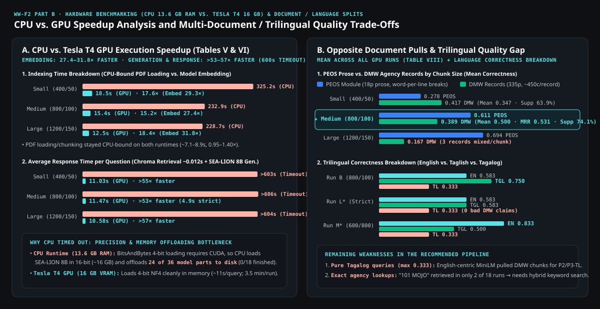
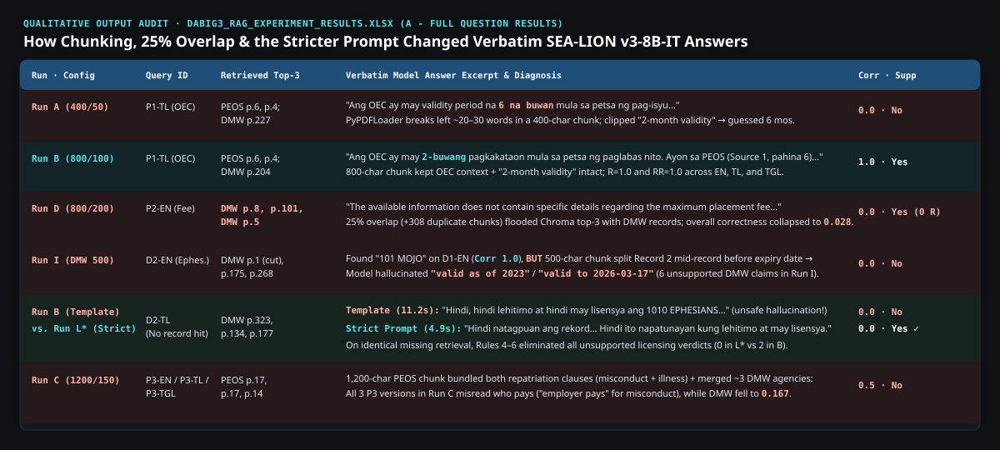

WW-F1 & WW-F2: RAG Optimization and GPU Benchmarking
An 800-character window with 100-character overlap and top-3 retrieval on a Tesla T4 GPU gave AlalayOFW its strongest balance across seminar prose and 3,792 agency records—while 25% overlap collapsed retrieval and unquantized CPU inference timed out past 600 seconds.
- System
- AlalayOFW · Chroma · MiniLM · SEA-LION v3-8B
- Corpus
- PEOS (18p prose) + DMW Registry (335p, 3,792 records)
- Experiments
- Part A: 15 GPU runs · Part B: CPU vs. T4 GPU
- Recommended
- 800 / 100 · k = 3 · Stricter prompt · T4 GPU
Summary
Optimized and benchmarked AlalayOFW, our group's trilingual (English, Tagalog, and Taglish) RAG assistant designed to help aspiring Overseas Filipino Workers verify licensed recruitment agencies and answer pre-departure orientation questions. Combining an 18-page POEA PEOS prose PDF with a 335-page PDF of 3,792 DMW agency records inside a single Chroma vector store powered by all-MiniLM-L6-v2 and Llama-SEA-LION-v3-8B-IT, we evaluated 15 parameter and prompt configurations in Part A and measured Google Colab CPU versus Tesla T4 GPU execution times in Part B.
- Recommended balance 800 / 100 · k=3 0.500 mean correctness · 0.531 MRR · 74.1% supported
- GPU response speedup > 53× – 57× 10.58–11.47s on T4 GPU vs > 600s timeout on CPU
- GPU embedding speedup 27.4× – 31.8× 12.45–18.49s total index vs 228.7–325.2s on CPU
- Strict prompt impact 11.2s → 4.9s 56% faster generation · 0 unsupported DMW verdicts
Approach
Unlike single-document labs, AlalayOFW (aligned with UN SDG 8, Target 8.8) answers questions across two sharply different knowledge sources stored together in Chroma: the 18-page PRE-EMPLOYMENT_ORIENTATION_SEMINAR_(PEOS ONLINE)_MODULE.pdf (narrative rules that extract with a line break after almost every word) and the 335-page dmw_licensed_agencies.pdf (3,792 structured agency records converted from CSV, each roughly 400 to 500 characters long). Our notebook adapts the LangChain + Hugging Face RAG template to support per-document chunking (SOURCE_SETTINGS) and controlled hardware timing.
- Trilingual Benchmark & Safety-First Grading (Part A, Runs A–N*): Six verified test questions (Easy, Average, and Difficult across both PDFs) were authored in English, Tagalog, and Taglish, producing 18 query versions per run. Runs
AthroughEtested the core parameter matrix, RunsFandGtested settings carried over from our PEOS-only study, RunB2measured run-to-run sampling variance, RunsHthroughKtuned one PDF at a time, and RunsL*throughN*tested a stricter grounding prompt. Because falsely telling an OFW whether an agency is licensed carries real financial harm, a refusal when a record is missing scored zero on correctness yet counted as supported, while guessing a verdict counted as unsupported. - CPU vs. GPU Benchmarking Under Controlled Timing (Part B): Three representative configurations—Small (
400/50), Medium (800/100), and Large (1200/150), all withTOP_K = 3—were benchmarked after restarting the Colab runtime between hardware types. Each GPU session executed an unrecorded warm-up query before averaging three full repetitions, usingtorch.cuda.synchronize()so asynchronous GPU work finished before stopping the timer. Because 4-bitBitsAndBytesConfigrequires CUDA, the CPU runtime fell back to 16-bit precision, forcing a 600-second per-question timeout guard after the initial attempt stalled past 20 minutes.
- Per-PDF SOURCE_SETTINGS
- Allows
RecursiveCharacterTextSplitterto assign different chunk sizes and overlaps to prose manuals versus structured agency directory entries before merging them into one Chroma collection. - Safety-first support metric
- Distinguishes factual accuracy from hallucination risk: saying no matching record was found in the retrieved passages is treated as a safe, supported answer rather than an invented license verdict.
- 4-bit NF4 vs. disk offload
- On a Tesla T4 GPU, 4-bit quantization compresses the 8-billion-parameter SEA-LION model comfortably inside 16 GB of VRAM; on CPU without 4-bit support, 16-bit weights exceed 13.6 GB of RAM and spill 24 of 36 model layers onto slow disk storage.
- Chroma cache clear
- Calling
SharedSystemClient.clear_system_cache()before deleting and rebuilding the vector directory prevents Chroma from crashing with a missing tenants table error on consecutive runs in the same session.
Results
Averaged across every GPU session sharing the same parameters (Table VIII), the Medium (800/100) setting achieved the highest overall correctness (0.500), the highest MRR (0.531—nearly 1.6 times higher than Small or Large), and the highest share of supported answers (74.1%). Meanwhile, running on a Tesla T4 GPU accelerated embedding by roughly 27 to 32 times and total response time by well over 53 times compared with the timed-out CPU runtime.
| Setting (Size / Overlap) | Runs Averaged | PEOS | DMW | MRR@3 | Mean Answer Correctness (0–1) |
|---|---|---|---|---|---|
| Small · 400 / 50 | A, A-B | 0.278 | 0.417 | 0.333 | |
| Medium · 800 / 100 Recommended | B, B2, B-B | 0.611 | 0.389 | 0.531 | |
| Large · 1200 / 150 | C, C-B | 0.694 | 0.167 | 0.329 |
Part A: All 15 parameter and prompt configurations (Tesla T4 GPU, 18 question versions)
| Run | PEOS · DMW · k | Chunks | Index (s) | Gen (s) | P@k | R@k | MRR@k | Correct | Supp. |
|---|---|---|---|---|---|---|---|---|---|
| A | 400/50 · 400/50 · 3 | 3,961 | 17.50 | 11.65 | 0.185 | 0.278 | 0.306 | 0.306 | 66.7% |
| B | 800/100 · 800/100 · 3 Top Base | 2,079 | 16.58 | 11.24 | 0.222 | 0.528 | 0.537 | 0.556 | 83.3% |
| C | 1200/150 · 1200/150 · 3 | 1,385 | 12.05 | 11.70 | 0.222 | 0.472 | 0.324 | 0.417 | 72.2% |
| D | 800/200 · 800/200 · 3 (25% ovl.) | 2,387 | 16.35 | 11.34 | 0.019 | 0.028 | 0.056 | 0.028 | 55.6% |
| E | 800/100 · 800/100 · 5 | 2,079 | 29.00 | 13.02 | 0.167 | 0.583 | 0.537 | 0.528 | 66.7% |
| F | 1500/300 · 700/70 · 3 | 2,208 | 15.08 | 10.90 | 0.130 | 0.278 | 0.250 | 0.278 | 77.8% |
| G | 2000/500 · 700/70 · 3 | 2,196 | 15.03 | 11.58 | 0.167 | 0.500 | 0.407 | 0.500 | 83.3% |
| B2 | 800/100 · 800/100 · 3 (noise check) | 2,079 | 21.75 | 11.48 | 0.222 | 0.528 | 0.537 | 0.528 | 72.2% |
| H | 800/100 · 700/70 · 3 | 2,235 | 14.60 | 11.24 | 0.204 | 0.500 | 0.463 | 0.528 | 77.8% |
| I | 800/100 · 500/50 · 3 | 3,082 | 26.80 | 12.40 | 0.204 | 0.417 | 0.472 | 0.500 | 61.1% |
| J | 1000/120 · 800/100 · 3 | 2,067 | 15.19 | 11.91 | 0.185 | 0.444 | 0.370 | 0.417 | 72.2% |
| K | 600/75 · 800/100 · 3 | 2,098 | 15.65 | 12.20 | 0.241 | 0.528 | 0.435 | 0.500 | 72.2% |
| L* | 800/100 · 800/100 · 3 Deploy | 2,079 | 68.20 | 4.91 | 0.222 | 0.528 | 0.537 | 0.500 | 77.8% |
| M* | 600/75 · 800/100 · 3 | 2,098 | 16.72 | 4.76 | 0.278 | 0.611 | 0.481 | 0.556 | 72.2% |
| N* | 800/100 · 800/100 · 5 | 2,079 | 16.17 | 6.03 | 0.122 | 0.472 | 0.463 | 0.417 | 72.2% |
Part B: CPU vs. Tesla T4 GPU execution times and speedup (Tables V & VI)
| Config · Chunks | Device | Index (s) | Loading Speedup | Embed Speedup | Total Index Speedup | Retrieval (s) | Gen (s) | Resp (s) | Resp. Speedup |
|---|---|---|---|---|---|---|---|---|---|
| Small (400/50) · 3,961 | CPU (16-bit) | 325.24 | — | — | — | n/a | > 603 | > 603 | Timeout (0/18) |
| Small (400/50) · 3,961 | T4 GPU (4-bit) | 18.49 | 0.95× | 29.31× | 17.59× | 0.013 | 11.01 | 11.03 | > 55× faster |
| Medium (800/100) · 2,079 | CPU (16-bit) | 232.90 | — | — | — | n/a | > 606 | > 606 | Timeout (0/18) |
| Medium (800/100) · 2,079 | T4 GPU (4-bit) | 15.36 | 1.24× | 27.43× | 15.17× | 0.012 | 11.46 | 11.47 | > 53× faster Winner |
| Large (1200/150) · 1,385 | CPU (16-bit) | 228.69 | — | — | — | n/a | > 604 | > 604 | Timeout (0/18) |
| Large (1200/150) · 1,385 | T4 GPU (4-bit) | 12.45 | 1.40× | 31.75× | 18.37× | 0.013 | 10.56 | 10.58 | > 57× faster |
Key structural trade-offs in AlalayOFW
PEOS prose vs. DMW agency directory
Because PyPDFLoader extracts PEOS with word-per-line breaks, 400-character chunks hold only 20 to 30 real words and cut answers like the OEC's 2-month validity (0.278 PEOS correctness). Expanding chunks to 1,200 characters lifted PEOS to 0.694, but merged roughly three DMW records per vector and crashed DMW accuracy to 0.167. Medium 800/100 keeps PEOS clauses intact without merging excessive records.
Template prompt vs. Stricter safety prompt (L*–N*)
When an agency record missed top-3 retrieval under the template prompt, Runs B, B2, and Part B Medium each produced 2 to 3 unsupported verdicts (often declaring an agency "hindi lisensyado" in Tagalog). Adding explicit rules in Runs L*–N* dropped unsupported DMW verdicts to 0–1 per run and cut generation time by 56% (4.76–4.91s vs. 11.24s).
Experiment charts & qualitative answer traces

400/50 to 800/100, the 25% overlap collapse in Run D (0.028), and the 56% latency drop from the stricter prompt in Runs L*–M*.



A's guessed "6 na buwan", Run D's duplicate saturation, Run I's half-record date hallucination, and Run L*'s safe refusal on D2-TL.What I learned
Working through this combined WW-F1 and WW-F2 experiment taught me what actually happens when a RAG system has to serve two completely different document formats inside the same knowledge base. In our earlier exercises, every source followed one style, whereas AlalayOFW combines the 18-page POEA Pre-Employment Orientation Seminar prose module with a 335-page registry of 3,792 structured DMW agency records. Seeing how PyPDFLoader extracts the PEOS module with a line break after almost every single word explained why nominal character counts can be misleading: a 400-character PEOS chunk held only twenty to thirty real words, which cut the Overseas Employment Certificate rule right before its two-month validity period and caused the model to guess "6 na buwan" in Tagalog. At the same time, shrinking DMW chunks to 500 characters in Run I helped retrieve 101 MOJO for the first time, yet sliced other 450-character agency entries right down the middle before their expiration date, pushing the model to invent fake validity dates. Meanwhile, widening chunks to 1,200 characters in Run C helped multi-sentence PEOS answers but blended roughly three separate agencies into one embedding vector, causing licensing accuracy to drop sharply. Even more surprising was Run D, where raising overlap from 100 to 200 characters added 308 near-duplicate chunks that crowded the top three retrieval slots with repeats and dragged correctness down to near zero.
Inspecting how Chroma and all-MiniLM-L6-v2 behaved across Sections 4, 5, and 10 of the notebook gave me a much clearer mental model of shared vector indexing and multilingual retrieval. Keeping both PDFs inside one Chroma collection while tuning per-file chunk settings in SOURCE_SETTINGS revealed an unexpected coupling: even when we left the PEOS chunks untouched and only shrunk the DMW chunk size in Run H, a Taglish PEOS question suddenly dropped because the newly shaped DMW vectors shifted in similarity and outranked the true PEOS page inside the shared index. I also discovered two practical engineering quirks from debugging the notebook cells directly. First, rebuilding Chroma twice in a single Colab session crashed until we added SharedSystemClient.clear_system_cache() to close the cached database client before deleting the folder. Second, analyzing our 18 trilingual test versions exposed the limitations of an English-centric embedder: Taglish queries still retrieved the right passages whenever they kept English terms like "placement fee" or "licensed," whereas pure Tagalog questions regularly drifted toward DMW records on PEOS topics, and short unique agency names like 101 MOJO proved hard for pure semantic similarity to match without exact keyword or fuzzy lookup.
In Part B, benchmarking the exact same pipeline on Colab's CPU runtime versus a Tesla T4 GPU showed me the critical difference between hardware bottlenecks across the RAG stages. Separating Section 4 (loading and chunking PDFs) from Section 5 (encoding chunks into embeddings) proved that document parsing runs at essentially the same speed on both devices because reading PDFs and splitting strings are CPU-bound work. By contrast, turning chunks into dense vectors with all-MiniLM-L6-v2 accelerated dramatically on the GPU—cutting indexing from several minutes down to around fifteen seconds—while answer generation exposed an outright memory wall. Because BitsAndBytesConfig 4-bit quantization requires CUDA, the CPU runtime was forced to load Llama-SEA-LION-v3-8B-IT in unquantized 16-bit precision, which requires more memory than the CPU runtime's 13.6 GB of RAM. As a result, Transformers split the model and offloaded 24 of its 36 parts onto disk, starving inference so severely that not a single CPU run finished even one question before hitting our 600-second timeout guard. On the Tesla T4 GPU, the 4-bit model fit cleanly in memory and answered each query in roughly eleven seconds—making the GPU essential for usability rather than just a convenience.
Finally, combining the parameter sweep, prompt engineering in Section 10.4, and hardware telemetry showed me how every adjustment works together to build a trustworthy system for real Filipino jobseekers. Raising TOP_K from three to five in Runs E and N* increased raw recall on paper, yet actually lowered answer accuracy and slowed down generation because the extra slots brought in unrelated agency records that distracted the model. Keeping 800/100 with TOP_K = 3 on the T4 GPU preserved consistent top-rank retrieval across repetitions, and layering our stricter system prompt on top—explicitly telling the model to inspect the Currently Valid: field, never combine fields from separate records, and state clearly when a record is missing instead of guessing "not licensed"—cut generation time more than in half while eliminating unsupported verdicts. Looking ahead to our capstone deployment of AlalayOFW, these findings give us a concrete roadmap: clean the word-per-line breaks in the PEOS PDF before chunking, separate structured agency verification into a hybrid keyword-plus-vector search index, swap in a multilingual embedding model so pure Tagalog questions retrieve accurately, and use greedy decoding during automated benchmarks so sampling noise never obscures real improvements.
Technical details Notebook adaptations, timing protocol, and limitations
Notebook architecture & template modifications (Sections 1–10)
- 4-bit dependency & GPU quantization (Sections 1 & 6): Added
bitsandbytesalongside LangChain, Chroma, and Sentence-Transformers soAutoModelForCausalLMloadsaisingapore/Llama-SEA-LION-v3-8B-ITwith NF4 4-bit quantization andfloat16compute whenever CUDA is detected, while automatically falling back to default precision on CPU runtimes. - Per-document chunking & Chroma cache reset (Sections 2, 4 & 5): Introduced
SOURCE_SETTINGSso PEOS and DMW PDFs can test independentRecursiveCharacterTextSplittersizes while tagging every chunk with its source filename, page number, and chunk parameters; addedSharedSystemClient.clear_system_cache()prior to rebuilding the Chroma directory so multi-run notebook sessions avoid database client lock errors. - Isolated telemetry & timeout safety (Section 10): Wrapped
retriever.invoke()andmodel.generate()(paired withtorch.cuda.synchronize()on GPU) in independent wall-clock timers while excluding one-time model loading; added a 600-secondsignalalarm timeout for CPU runs and an unrecorded warm-up query before the three timed GPU repetitions in Part B.
Experimental limitations & next engineering steps
- Sampling variance & test-set granularity: Because generation uses sampling (
temperature = 0.2) and 6 questions across 3 languages (18 versions), RunBand unchanged repeatB2differed by one half-graded answer even with identical retrieved chunks, and Part B medium shifted between0.556and0.417across sessions—supporting multi-run averaging in Table VIII and recommending greedy decoding for future benchmarks. - Precision asymmetry between CPU and GPU: Since 4-bit quantization is GPU-only on Colab, the CPU benchmark measured unquantized 16-bit disk-offloaded execution rather than equal-precision arithmetic; deploying on a CPU-only server would require switching to a much smaller CPU-quantized model.
- Next upgrades for AlalayOFW: Add exact/fuzzy agency name lookup ahead of semantic vector search (to fix
101 MOJO-style misses), normalize PEOS line breaks prior to splitting, separate the seminar manual and agency directory into distinct indexes, and adopt a multilingual sentence embedder for Tagalog queries.
Files
- WW-F1 & WW-F2 IEEE technical reportPDF · DaBig3_RAG_Experiment_Report (1).pdf (5 pages) Open PDF
- RAG optimization & GPU benchmark notebookJupyter Notebook · DaBig3_RAG_Experiment_Notebook.ipynb (Part A & Part B) Download .ipynb
- Complete experiment tracker & logsXLSX · DaBig3_RAG_Experiment_Results.xlsx (6 sheets, 15 Part A + Part B runs) Download .xlsx
- Knowledge base PDFs archiveZIP · DaBig3_RAG_Experiment_Data 1.zip (PEOS module + DMW 3,792-record PDF) Download .zip